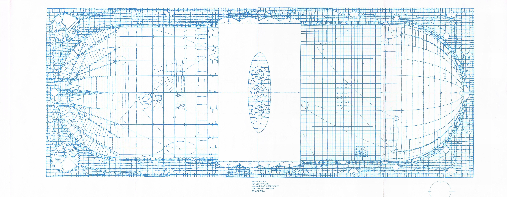
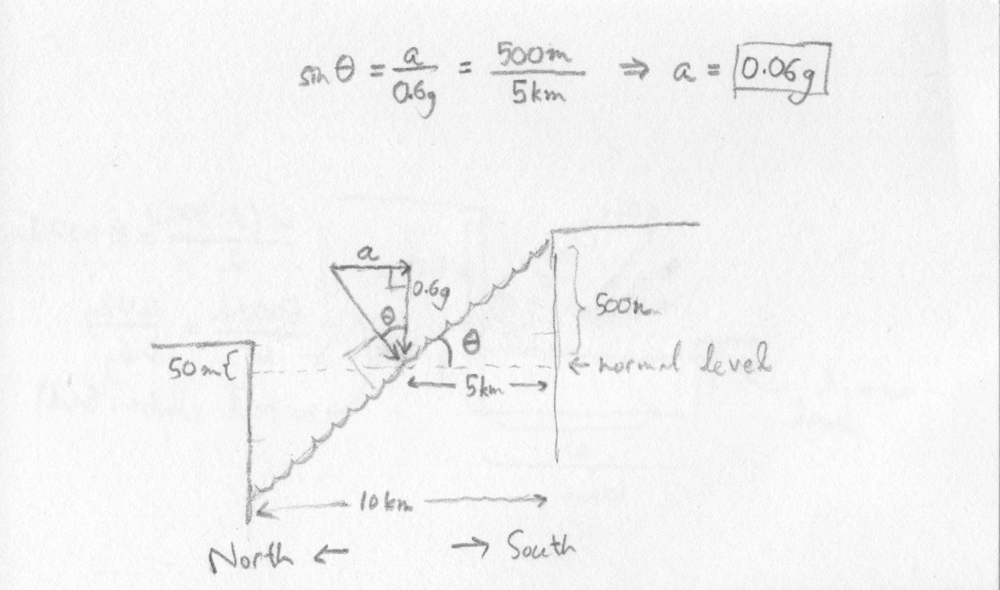
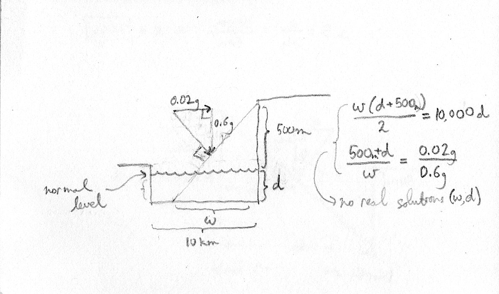

A Suspicion of Plausible Answers
Friday, August 14, 2015 · 3 min read
He [Norton] had a suspicion of plausible answers; they were so often wrong.
— Rendezvous with Rama, Arthur C. Clarke
Clarke’s Rendezvous with Rama describes the exploration of a giant spaceship called “Rama”. If you haven’t read the book yet, go read it and come back, because the rest of this post is a really big spoiler. I’ll be waiting; don’t worry.
Welcome back.
To me, the charm of Rendezvous with Rama is the way Clarke introduces parts of the spaceship, lets you guess what they’re for, and then reveals their purpose in a series of intertwined narratives. The book is a guessing game.
One of the central mysteries, of course, is the Southern Cliff of the Cylindrical Sea: why is it so much higher than the Northern Cliff?
In a flash of inspiration, the exobiologist Dr. Perera realizes that when Rama accelerates (to the north), the Sea would rise against the Southern shore; the Cliff is a barrier to prevent a great flood. In his own words:
“The Cylindrical Sea is enclosed between two cliffs, which completely circle the interior of Rama. The one on the north is only fifty meters high. The southern one, on the other hand, is almost half a kilometer high. Why the big difference? No one’s been able to think of a sensible reason.
“But suppose Rama is able to propel itself—accelerating so that the northern end is forward. The water in the sea would tend to move back; the level at the south would rise, perhaps hundreds of meters. Hence the cliff.”
— Rendezvous with Rama, Arthur C. Clarke
On a roll now, Perera goes on to predict—with not more than twenty seconds of thought and scribbling—the maximum possible acceleration of Rama based on the height of the Cliff (500 meters). His result, 0.02g (2% of Earth’s gravitational acceleration), is confirmed at the end of the book.
How did he do it? Let’s investigate.
Here’s a diagram of Rama’s cross-section to help you follow along. It’s taken from the cover art of a video game based on the novel; the image was posted to a forum thread by someone named DELTA.

The first page of this paper contains a simpler schematic as well as some pretty pictures.
First, some raw data scraped by scouring the novel.
We have a couple of ways of determining the unaffected “gravity” (centrifugal effect) on Rama. The centripetal acceleration is proportional to the square of the angular velocity and the radius. Knowing that the Plains are 8km from the axis about which Rama rotates, and that it rotates at 0.25rpm (a rotation every 4 minutes), we calculate that Rama’s gravity is 0.6 that of Earth’s:
\[ g_\text{rama} = \omega^2r = \left(\frac{2\pi}{4\times60\,\text{sec}}\right)^2\times(8000\;\text{m}) = 5.483 \text{m}/\text{s}^2 \approx 0.6\, g_\text{earth} \]
For those without MathJax, that said
g_rama = w^2 r
= (2pi / (4*60s))^2 * 8000m
~= 0.6 g_earth
This result agrees with a statement by one of the explorers, Mercer: when he was less than 2km down the stairway, he said his weight was around a tenth of what it would be on Earth.
We know the width of the sea: it’s 10km across. Unfortunately, we know very little about the depth of the sea. We do know that the seafloor is not uniform; it’s ridged to disperse large waves. We even have a lower bound on the deepest portion: at one point, an anchor is lowered 30 meters into the sea. However, these facts were discovered after Perera’s calculation, so we could be justified in assuming that the seafloor is uniformly “flat”. We also have an upper bound of 2km because that’s the difference between Rama’s inner and outer radii.
Let’s assume that the sea is at least 0.5 kilometers deep*. As long as it’s at least that deep, we don’t need to know exactly how deep it is, because the sea surface will never intersect with the seafloor.
Here’s what it looks like†:

Based on the force diagram, a bit of similar triangles magic shows that for the water to reach a height of 500 meters, the ship must accelerate northwards at 6% of Earth’s gravity. This is arguably pretty close to 0.02 g, considering all the approximations and eyeballed measurements involved. (At least, it’s the correct order of magnitude, which is supposedly all astronomers really care about.)
*Interestingly, if you assume that the sea is shallower than 0.5 km, you can try to reverse-engineer the exact depth Perera must have assumed. It turns out that there are no real solutions for depth which yield 0.02g as the acceleration. Here’s the diagram that corresponds to the scenario—the key insight is that the area of the rectangle and the triangle must be the same since the volume of liquid is the same.

[†Apologies for the Paleolithic-era hand-drawn diagrams which look like they were scanned in the ‘80s. I would appreciate it if someone could whip up a nice computerized image in a vector format…]
Overall, I’m impressed with the accuracy of Clarke’s physics. I suppose attention to detail like that is what makes these novels so fascinating.
I would love to see other explanations of Perera’s result. Maybe I missed something. Let me know if you make some discoveries.